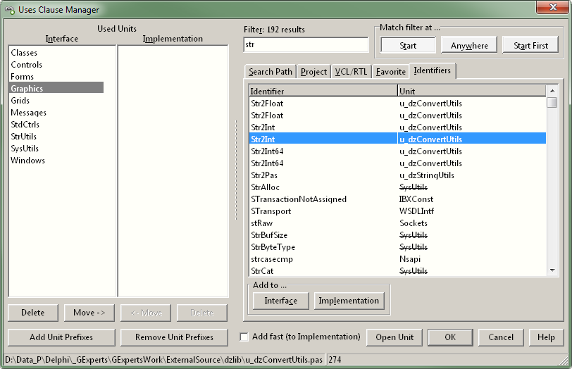
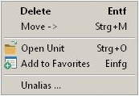
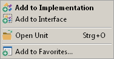
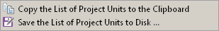
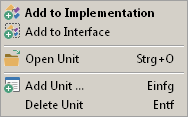
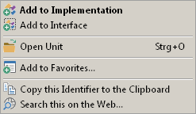
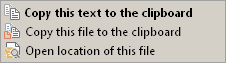

Uses Clause ManagerGeneral |
  
|
Uses Clause ManagerGeneral |
|
this page .. |
see also .. |
|---|---|
General |
|
|
|
|
|
|
|
|
|
|
|
|
|
|
Overview |
|
The "Uses Clause Manager" allows you to manage both uses clauses of the current unit. The used units are shown in the left part of the expert's dialog. There you can delete units from these lists or move entries from one of the lists to the other. However, the main task of this expert will usually be add units required for new code added in your source.
Although it is possible to drop files from Windows Explorer onto both uses lists, the units to be added are usually selected from the lists in the right part of the dialog and copied from there to one of the uses lists.
The check mark Add fast (to interface) or Add fast (to implementation) changes the behavior of the OK button. If checked, it adds the selected unit to the uses clause given in the caption and closes the dialog. Which uses clause is given in the caption depends on where the cursor in the code editor is located. If it is in the interface section, the caption says "to interface", if it is in the implementation section, the caption says "to implementation".
The Open Unit button opens the selected unit in the code editor and closes the dialog. Note that there is a shortcut Ctrl+O for it, or you can double click an entry. In this case the unit lists in the source will not be changed.
The OK button or Enter closes the dialog and commits your changes, the Cancel button or Escape closes the dialog and discards any changes.
Notice |
▪The Uses Clause Manager does not sort the units in the source, nor does it detect or remove unused units. |
|
▪The splitter only works if the window is not displayed in the minimum width. |

Used units (left part of dialog) |
|
Available Actions |
|
On the left the expert's dialog shows two lists with the units in the Interface and Implementation uses clauses respectively. The four buttons below these lists Delete from the corresponding list or Move entries from one of the lists to the other.
The units to be added are usually selected from the lists placed on the right part of the dialog and added from there to the uses lists; for further information see the next paragraph. Alternatively, you can drag files from the Windows Explorer to any of these two lists to add a unit.
Alternatively to using the Move button it is also possible to move entries with drag and drop between the two uses lists.
Further below the lists there are two buttons to Add Unit Prefixes or Remove Unit Prefixes (name space qualifiers), e.g. they convert "Registry" to "System.Win.Registry" and vice versa. This functionality is helpful for people who develop software for multiple Delphi versions including those ancient versions that did not support name spaces.
Notice |
▪Adding these prefixes is a bit tricky because the expert needs to go through all the configured name spaces in the project and use the unit search path to find a unit matching these name spaces. If it does not find them, it will not change the unit name. |
|
▪Although the two lists on the left are initially sorted, added or moved items are placed at the end of the lists. |
|
▪Dragging also works from the lists on the left to the lists on right for removing entries from Uses lists. But note that only the list on the Favorites tab accepts entries! Dragging an entry to one of the other three lists will still remove the unit from the source list. The drag cursor is not set to No Drop in this case to allow removing units in this manner. |
Context menu and keyboard shortcuts |
|
All Buttons also have corresponding context menu items and keyboard shortcuts:
 |
Delete - Always deletes from the currently focused list. This is also the default action executed with a double click. |
Move - Moves selected item from the current list to the other. |
|
Open Unit - Opens the currently selected unit in the editor and closes the dialog without making any changes to the source code. |
|
Add to Favorites - Adds the currently selected unit(s) to the favorite units list and switches to the favorites tab. |
|
Unalias - Replaces units like WinTypes and WinProcs, which have been declared as aliases to Windows for ages, with their actual unit. The same goes for dbiTypes, dbiProcs and dbiErrs which will be replaced with BDE. This will also work for other unit aliases configured in the project. |
Available units (right part of dialog) |
|
On the right of the expert's dialog there are five tabs with lists from which the desired unit can be selected and added to the uses lists in the left part of the dialog. The content of the Favoriteslist is configured by the user, the other lists are filled automatically. If an entry is crossed out, this means that it is already in one of the Used units lists.
Tabs "Search path" + "Project" + "RTL/VCL" |
|
The Search Path list contains all units in the current unit search path. The Project list shows all units of the current project. The VCL/RTL list holds all units of VCL/RTL. The caption is a bit of a misnomer, because the list also contains units from the Firemonkey framework.
With the filter above the lists you can narrow down the listed entries, e.g. entering "vcl" will only show items that contain that string in the unit name. The list is updated dynamically, so changing the filter will immediately show different entries. While the focus in on the filter edit, you can still move the selected line in the list using the up/down and page up/down keys. By holding the shift key you can also select multiple entries. The full path of the currently selected unit is shown on the status bar.
The buttons in the Add to.. group box add the selected unit(s) to the uses clause in the interface and implementation section respectively. Note that both buttons have two keyboard shortcuts: Alt+C/Alt+L adds the selected unit(s) and keeps the expert open, Ctrl+C/Ctrl+L adds the selected unit(s) and automatically closes the dialog.
It is also possible to select one or multiple entries with the mouse and drag the selected unit(s) to the Interface or Implementation lists on the left.
With the button Add all to favorites you can copy all list elements to the Favorites list; the current selection is not taken into account. Favorites should represent a manageable and exclusive selection, so all elements of a list should only be included in exceptional cases - even if the number of visible items can be reduced by the filter.
The lists on all tabs have corresponding context menu items and keyboard shortcuts:
 |
Add to Implementation - Adds the currently selected unit(s) to the implementation list. |
Add to Interface - Adds the currently selected unit(s) to the interface list. |
|
Open Unit - Opens the currently selected unit in the editor and closes the dialog. |
|
Add to Favorites - Adds the currently selected unit(s) to the favorite units list and opens the favorites tab (see above notes). |
On the Project tab, you will also find the Copy/Save List button, which allows you to copy the entire list to the clipboard for later use. Directly next to it is an arrow button that opens the following drop down menu:
 |
Copy .. to clipboard - Copies the complete list to the clipboard for later use. |
Save .. to disk - Opens the save file dialog to save the complete list to any file. |
Tab "Favorite" |
|
The list placed at the Favorite tab contains the users favorite units. It is recommended to limit list items to a manageable number of elements - even if the number of visible items can be reduced by the filter. Initially this list is empty, entries can be added via a file select dialog, by copying elements from other lists or dragging from the Used lists or the Windows Explorer.
With the filter above the list you can narrow down the listed entries, e.g. entering "vcl" will only show items that contain that string in the unit name. The list is updated dynamically, so changing the filter will immediately show different entries. While the focus in on the filter edit, you can still move the selected line in the list using the up/down and page up/down keys. By holding the shift key you can also select multiple entries. The full path of currently selected unit is shown on the status bar.
The buttons in the Add to.. group box add the selected unit(s) to the uses clause in the interface and implementation section respectively. Note that both buttons have two keyboard shortcuts: Alt+C/Alt+L adds the selected unit(s) and keeps the expert open, Ctrl+C/Ctrl+L adds the selected unit(s) and automatically closes the expert.
It is also possible to select one or multiple entries with the mouse and drag the selected unit(s) to the Interface or Implementation lists on the left.
With the button Add Unit.. you can add any unit via a file select dialog to the favorites list, the button Delete Unit deletes the currently selected units(s) from the favorites list. The list will only be re-sorted alphabetically the next time the dialog is opened.
The Favorites tab has corresponding context menu items and keyboard shortcuts:
 |
Add to Implementation - Adds the currently selected unit(s) to the implementation list. |
Add to Interface - Adds the currently selected unit(s) to the interface list. |
|
Open Unit - Opens the currently selected unit in the editor and closes the dialog. |
|
Add Unit - Opens the file select dialog and let you add any unit file to the favorites list. |
|
Delete Unit - Removes the currently selected unit(s) from the favorites list. |
Tab "Identifiers" |
|
The last list, placed on the Identifiers tab, is probably the most useful one. It lists all identifiers and units from the units search path, the list items are sorted alphabetically by identifier in the first column.
With the filter above the list you can narrow down the listed entries, e.g. if you type "TWinControl" the list will be filtered down to less than 10 entries of several thousand entries. The list is updated dynamically, so changing the filter will immediately show different entries. Even while the focus in on the filter edit, you can still move the selected line in the list using the up/down and page up/down keys. The full path of currently selected unit is shown on the status bar.
Below the list there are three buttons that control the way the filter works, these buttons can get the input focus, so they can be pressed using the keyboard:
▪Start - Show items that start with the search string.
▪Anywhere - Show items that contain the search string.
▪Start First - Show items that start with the search string first, followed by others that contain the search string.
The buttons in the Add to.. group box add the selected unit(s) to the uses clause in the interface and implementation section respectively. Note that both buttons have two keyboard shortcuts: Alt+C/Alt+L adds the selected unit(s) and keeps the expert open, Ctrl+C/Ctrl+L adds the selected unit(s) and automatically closes the expert.
The Identifiers tab has corresponding context menu items and keyboard shortcuts:
 |
Add to Implementation - Adds the currently selected unit to the implementation list. |
Add to Interface - Adds the currently selected unit to the interface list. |
|
Open Unit - Opens the currently selected unit in the editor and closes the dialog. |
|
Add to Favorites - Adds the currently selected unit to the favorite units list and opens the favorites tab. |
|
Copy this Identifier... - Copies the selected identifier to the clipboard for later use and keeps the expert open. |
|
Search this on the Web... - Opens the default browser and starts an internet search for currently selected identifier. |
Notice |
▪The Identifier tab can be used as a replacement for the Find Unit refactoring of the Delphi IDE (which for me doesn't work most of the time and if it does is very slow). And of course the Uses Clause Manager also works for older Delphi versions which didn't have this refactoring feature. |
▪If you filter for e.g. TWinControl the expert shows several matching entries, e.g. the two top ones in the unit Controls. While this looks like a bug at first, but in fact - it's not a bug, it's a feature. There are actually two declarations of TWinControl in the unit Controls (a forward declaration and the actual class declaration). The expert lists them both, so when the user opens the unit with Ctrl+O the cursor will be placed in the line with the selected entry. |
|
▪The Identifiers list is updated in a background thread. For this to work it parses all source files in the various search paths of the project. And because this takes a while, it caches the results and only updates this cache if a new unit is found or a unit has been changed. The directory for this cache is configured in the GExperts Configuration dialog on the General tab. |
Statusbar |
|
The status bar always shows the full path of the selected unit in the 1st panel; the second panel shows the files line number of the currently selected identifiers declaration (for "Identifiers" tab only). Right clicking on the status bar shows a context menu with the following menu items:
 |
Copy this text to the clipboard - Copies the full file name to the clipboard. |
Copy this file to the clipboard - Copies the file to the clipboard so it can be used as if copied from the Explorer. |
|
Open location of this file - Opens the folder in which the file is located in the Explorer and selects the file. |